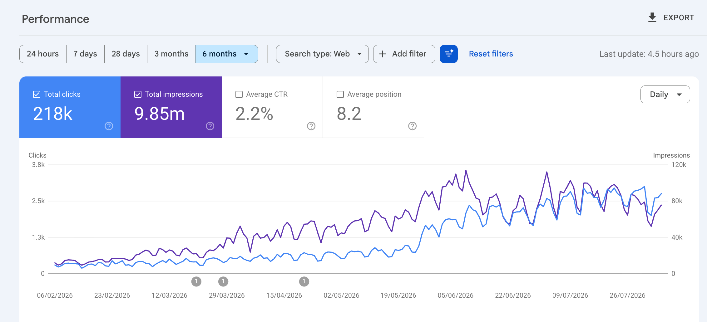

The situation
This SaaS product operated in a market with healthy search demand and had scaled content production using AI.
The website had accumulated a substantial amount of content, but publishing at scale wasn’t translating into its full organic potential. Technical issues, inconsistent on-page optimization, and missing coverage across the buyer journey were holding performance back.
The website didn’t need more disconnected pages. It needed a stronger system behind them.
The challenge
Rapid content production had created volume without enough strategic structure.
Important ICP problems, product use cases, commercial searches, and decision-stage topics remained uncovered. Existing pages also needed stronger optimization, quality control, and clearer connections to relevant commercial pages.
What we audited
We reviewed:
- Technical SEO and website health
- On-page optimization across existing pages
- Content quality, relevance, and search intent
- Missing topics across the buyer journey
- Website structure and internal page relationships
- High-intent and commercially valuable searches
- Search performance and growth opportunities
This gave us a clearer view of which existing assets could be improved and where new coverage could create meaningful growth.
What we changed
We transformed content production into a more focused organic growth system. Our work included:
- Fixing high-impact technical and on-page issues
- Introducing stronger quality controls for AI-assisted content
- Improving valuable existing pages
- Identifying missing topics across the buyer journey
- Expanding coverage around ICP problems and high-intent searches
- Building clearer relationships between informational and commercial pages
- Strengthening website structure and internal linking
- Monitoring performance and adapting priorities as the website grew
The focus moved from publishing volume to relevance, quality, market coverage, and commercial value.
The outcome
Over the six-month GSC view, the website generated 218K organic clicks and 9.85M search impressions, with an average search position of 8.2.
Daily clicks grew from a few hundred early in the period to regularly exceeding 2,000 as the website captured more of the available search demand.
The result was a more complete organic presence — one that could attract buyers across discovery, consideration, and decision-stage searches.
The impact
GSC performance

The takeaway
AI helped the company scale production, but sustainable growth came from strategy, quality control, technical strength, and complete buyer-journey coverage.
The goal wasn’t merely to publish more pages. It was to make every page contribute to discoverability, buyer trust, and business growth.
Client identity, website details, and commercially sensitive information have been withheld for confidentiality. Search figures are based on the six-month Google Search Console view shown. Percentage-based commercial and AI-visibility outcomes reflect internal performance estimates.